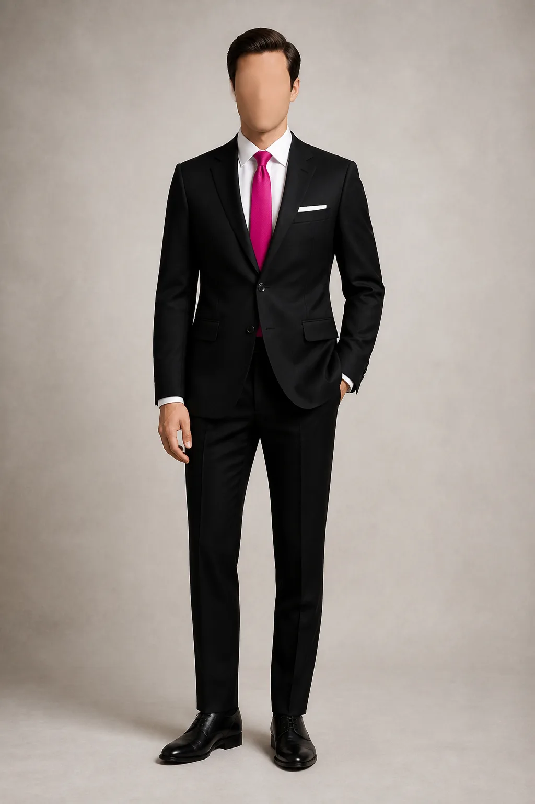

Dress code | Padrinhos
Padrinhos
Nosso traje escolhido é o terno preto clássico. Camisa branca, gravata fúcsia e sapato social preto completam a composição.

Traje escolhido
Terno preto
Clássico, liso e de duas peças.- Camisa
- Branca e lisa
- Gravata
- Fúcsia ou pinkCombine o tom com o vestido do seu par.
- Sapato
- Social preto
- Lenço
- Branco, com dobra simples